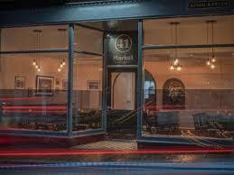
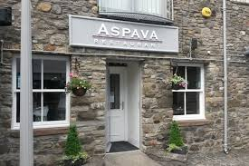
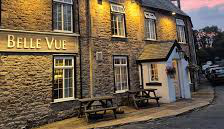
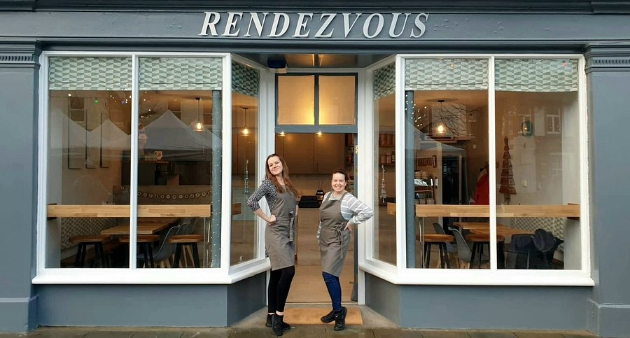
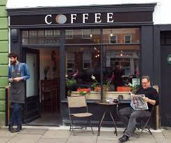
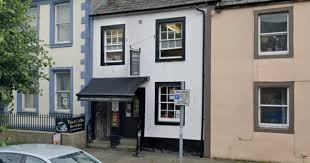
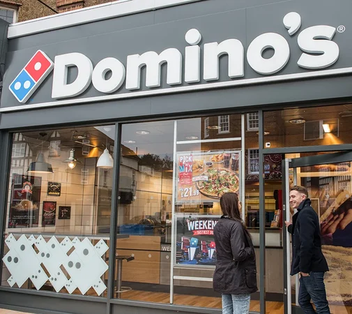
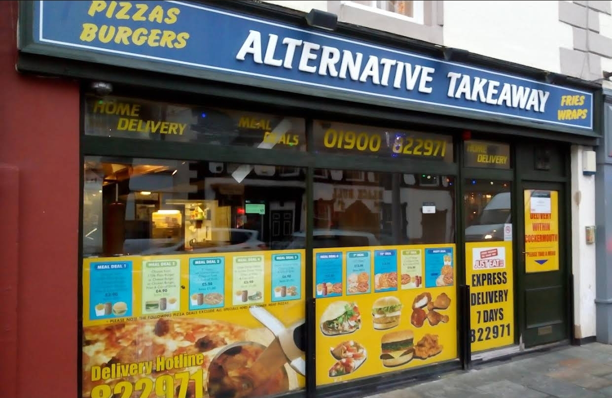

🏡 House Information
Bins
- Black bin: general household waste
- Green bin: metal, plastic and glass
- Blue-top bin: cardboard and paper
Checkout: 10:00 AM
- Black bin: general household waste
- Green bin: metal, plastic and glass
- Blue-top bin: cardboard and paper
Checkout: 10:00 AM
🗺 Town Map
🍽 Restaurants



☕ Cafés



🍱 Takeaways


